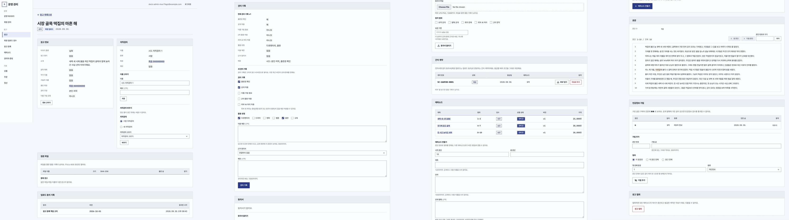
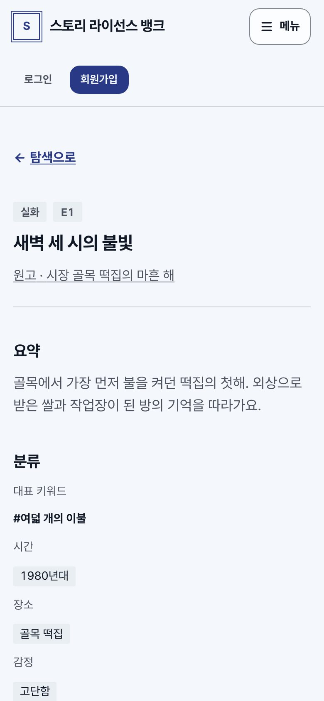
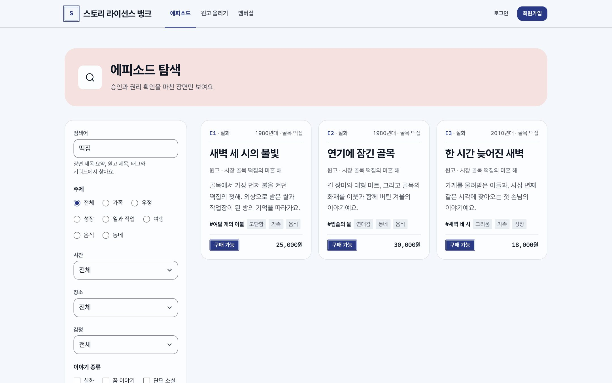
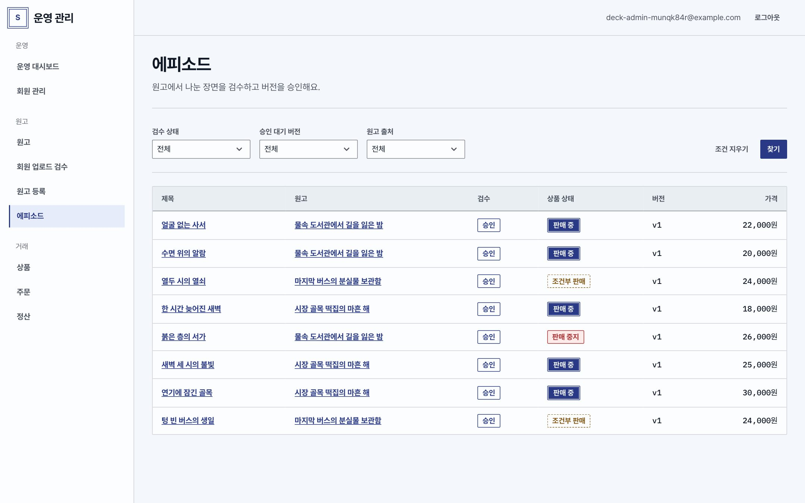

Design Direction Brief
스토리뱅크
디자인 방향 제안
컨셉은 "서고"입니다. 도서관 목록 카드, 청색 도장 잉크, 얇은 구분선에서 출발했습니다. 기록과 권리를 다루는 서비스인 만큼 신뢰감을 우선했고, 공개 화면에는 가볍고 밝은 분위기를 더했습니다. 흔한 템플릿처럼 보이지 않는 화면을 목표로 했습니다.
- 스타일
- 에디토리얼
- 포인트 컬러
- 잉크 블루
- 글꼴
- Pretendard + Plex Mono
- 톤
- 업무형(관리자) · 가벼운 변형(공개)
01 / Moodboard
무드보드
종이, 목록 카드, 도장, 장면

- 원고
- 시장 골목 떡집의 마흔 해
- 판매
- 판매 중 · 25,000원
- 이용
- 전문 열람과 비상업 참고


"떡집의 불은 늘 새벽 세 시에 켜졌다. 골목에서 가장 먼저 김이 오르는 가게였다."
공개 발췌 · 원문 그대로 인용02 / Principles
디자인 원칙
- TRUST기록처럼 믿을 수 있게분류 코드, 도장처럼 찍히는 상태 배지, 구분선 중심의 테이블. 화려함보다 정확함이 먼저 보이게 합니다.
- LIGHT공개 화면은 가볍게공개 화면은 부드러운 모서리와 에피소드 카드로 둘러보는 재미를 줍니다. 파스텔 타일과 사진은 BI와 사진 사용이 정해지면 적용합니다(검토 항목 DR2).
- READ읽는 화면은 읽기 좋게에피소드 상세와 서재는 본문 폭 38em, 줄 간격 1.85의 읽기 전용 레이아웃입니다.
- COLOR색은 의미가 있을 때만포인트 컬러는 주요 동작과 선택 상태에만 씁니다. 상태는 색과 텍스트를 함께 써서 색만으로 구분하지 않습니다.
- MOTION절제된 모션색·위치·투명도에만 80–240ms 전환을 적용하고, 운영체제의 "동작 줄이기" 설정을 따릅니다. 숫자가 올라가는 효과나 스크롤 연출은 쓰지 않습니다.
03 / Tone
두 가지 톤
같은 토큰, 다른 스타일


04 / Structure
레이아웃 유형
| 레이아웃 유형 | 쓰는 곳 | 특징 |
|---|---|---|
| 허브형 첫 화면 | 첫 화면 | 검색창 중심의 상단 영역, 이야기 종류 카드, 새로 공개된 에피소드 |
| 목록형 | 탐색·멤버십·원고 올리기 | 한 줄 헤더, 페이지 타이틀, 에피소드 카드와 둥근 폼 |
| 읽기형 | 에피소드 상세·서재 | 분류 코드 줄, 큰 제목, 본문 폭 38em |
| 업무형 테이블 | 관리자 화면 전체 | 왼쪽 사이드 메뉴 + 데이터 테이블, 상세는 섹션 패널 |
05 / Benchmark
참고한 구조
화면 구조는 크라우드펀딩과 창작자 플랫폼(텀블벅·와디즈·킥스타터·인디고고·패트리온)을 참고했습니다. 가져온 것은 "고르고 담는 흐름"과 "창작자 안내"이고, 가져오지 않은 것은 과장된 수치와 자극적인 배너입니다.
카드와 하단 선택 바
여러 회차를 골라 합계를 보며 담는 하단 선택 바, 에피소드 카드의 정보 순서.
제공자 안내
원고를 올리는 회원을 위한 단계 안내와 책임 고지를 한 흐름으로 묶었습니다.
과장과 자극
올라가는 숫자, 반짝이는 배너, 과한 그라데이션 같은 흔한 장식.
06 / Decision
디자인에서 확인이 필요한 항목
후보는 스토리뱅크, 스토리 라이선스 뱅크, K-Story 라이센스 뱅크입니다. 시안의 워드마크는 임시이며, 로고와 BI 컬러가 확정되면 포인트 컬러 계열만 바꿉니다.
상세 디자인 후보: 첫 화면, 에피소드 탐색, 에피소드 상세, 원고 상세·회차 선택, 장바구니, 내 서재, 운영 대시보드, 원고 목록·상세(관리자).
파스텔 타일과 기록 사진을 공개 화면에 적용할지, 기록 사진을 쓴다면 원고 제공자 동의가 필요한지 정합니다.